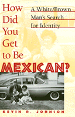

A readable account of a life spent in the borderlands between racial identity
A readable account of a life spent in the borderlands between racial identity


 A readable account of a life spent in the borderlands between racial identity
A readable account of a life spent in the borderlands between racial identity

|  |
How Did You Get to Be Mexican?A White/Brown Man's Search for IdentityKevin R. Johnsonpaper EAN: 978-1-56639-651-6 (ISBN: 1-56639-651-4) |
"Engaging and warmly inviting. Funny and tragic by turns, this book has a momentum that carries the reader along. Johnson's struggles reverberate beyond himself; the incidents he recounts, whether dramatic or small, apply to the lives of others who have had to deal with poverty, class origins, and racial stereotyping."
—Richard Delgado, co-editor of Critical White Studies: Looking Behind the Mirror
This compelling account of racial identity takes a close look at the question "Who is a Latino?" and determines where persons of mixed Anglo-Latino heritage fit into the racial dynamics of the United States. The son of a Mexican-American mother and an Anglo father, Kevin Johnson has spent his life in the borderlands between racial identities. In this insightful book, he uses his experiences as a mixed Latino-Anglo to examine issues of diversity, assimilation, race relations, and affirmative action in contemporary United States.
Excerpt available at www.temple.edu/tempress
"A compelling and thoughtful portrayal of the struggle for identity faced by a sensitive young man who did not fit neatly into the artificial racial and ethnic categories embedded in the political and cultural fabric of this nation."
—Gregory H. Williams, Dean of Ohio State University College of Law
Read a review on H-Net, June 2000.
Preface
1. Introduction
2. A "Latino" Law Student? Law 4 Sale at Harvard Law School
3. My Mother: One Assimilation Story
4. My Father: Planting the Seeds of a Racial Consciousness
5. Growing Up White?
6. College: Beginning to Recognize Racial Complexities
A Family Gallery
7. A Corporate Lawyer: Happily Avoiding the Issue
8. A Latino Law Professor
9. My Family/Mi Familia
10. Lessons for Latino Assimilation
11. What Does It All Mean for Race Relations in the United States?
Notes
Bibliography
Index
 | Kevin R. Johnson is Professor of Law at the University of California, Davis. He is author of a number of law review articles on civil procedure, civil rights, race relations, immigration law, and refugee law. He has also written The "Huddled Masses" Myth (Temple). |
Latino/a Studies
Law and Criminology
© 2015 Temple University. All Rights Reserved. This page: http://www.temple.edu/tempress/titles/1398_reg.html.